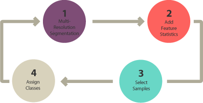

7 Week 7 - Classification II
7.1 Summary
covering sub-pixel classification, accuracy assessment and cross-validation.
Last week, we mentioned that supervised and unsupervised classification is pixel-based. In other words, it creates square pixels and each pixel has a class. Today we dive into higher level image classification techniques- object-based image analysis.

7.1.1 Object-Based Image Analysis (OBIA)
OBIA Groups pixels into representative vector shapes with size and geometry. It doesn’t create single pixels. Instead, it generates objects with different geometries. If you have the right image, objects can be so meaningful that it does the digitizing for you. For example, the segmentation results below highlight buildings.

Four steps to perform OBIA classification:
- Perform multiresolution segmentation
- Select training areas
- Define statistics
- Classify
In OBIA classification, we can use different methods to classify objects. For example,
shape: if we want to classify buildings, we can use a shape statistic such as “rectangular fit”. This tests an object’s geometry to the shape of a rectangle.
texture: homogeneity of an object. For example, water is mostly homogeneous because it’s mostly dark blue. But forests have shadows and are a mix of green and black.
spectral: we can use the mean value of spectral properties such as near-infrared, short-wave infrared, red, green, or blue.
geographic context: objects have proximity and distance relationships between neighbors.
Nearest neighbor (NN) classification: similar to supervised classification. After multi-resolution segmentation, the user identifies sample sites for each land cover class. Next, define statistics to classify image objects. Finally, the nearest neighbor classifies objects based on their resemblance to the training sites and the statistics defined.
7.1.2 How to decide which image classification technique to use?
Let’s say you want to classify water in a high spatial resolution image.
You decide to choose all pixels with low NDVI in that image. But this could also misclassify other pixels in the image that aren’t water. For this reason, pixel-based classification like unsupervised and supervised classification gives a salt and pepper look.
Humans naturally aggregate spatial information into groups. Multiresolution segmentation does this task by grouping homogenous pixels into objects. Water features are easily recognizable after multiresolution segmentation. This is how humans visualize spatial features.
- When should you use pixel-based (unsupervised and supervised classification)?
- When should you use object-based classification?

As illustrated in this article, spatial resolution is an important factor when selecting image classification techniques.
When you have a low spatial resolution image, both traditional pixel-based and object-based image classification techniques perform well.
But when you have a high spatial resolution image, OBIA is superior to traditional pixel-based classification.
7.1.3 Accuracy assessment
A Confusion Matrix is a fundamental tool for assessing the performance of classification models in machine learning and statistics. It provides a visual representation of the actual vs. predicted outcomes for a binary classifier, helping to understand how well the model performs in distinguishing between two classes (e.g., spam vs. non-spam in email filtering).
The confusion matrix consists of four key elements:
- True Positives (TP): Instances correctly predicted as positive (e.g., emails correctly identified as spam).
- False Negatives (FN): Positive instances incorrectly predicted as negative (e.g., spam emails misclassified as non-spam).
- False Positives (FP): Negative instances incorrectly predicted as positive (e.g., non-spam emails misclassified as spam).
- True Negatives (TN): Instances correctly predicted as negative (e.g., non-spam emails correctly identified as non-spam).
Advanced classification metrics derived from the confusion matrix offer deeper insights into the model’s performance, including:

- Sensitivity (Recall or True Positive Rate): The proportion of actual positives correctly identified by the model. High sensitivity indicates the model is good at catching positive cases.
- Specificity (True Negative Rate): The proportion of actual negatives correctly identified, showing how well the model identifies negative cases.
- Precision: The proportion of positive identifications that were actually correct, highlighting the model’s accuracy in predicting positive classes.
- Accuracy: The overall proportion of correct predictions made out of all predictions, providing a general measure of the model’s performance.
- F1 Score: The harmonic mean of precision and recall, offering a balance between them and is particularly useful when the classes are imbalanced.
Accuracy Assessment refers to evaluating how accurately a model predicts outcomes across its entire set of predictions. It looks not just at how many guesses are right (accuracy), but also at how the model balances detecting true positives versus true negatives, its precision, and more. These details are especially important when the data isn’t evenly distributed. This process helps in identifying the strengths and weaknesses of a model, guiding improvements and adjustments to enhance its predictive capabilities.
7.2 Reflection
This week’s exploration of remote sensing image classification introduced me to the ability of machine learning (ML) to discriminately interpret the Earth’s surface from satellite imagery. I learnt about ML techniques such as CART, RF, ML, SVM, and etc. and practised the difference between supervised and unsupervised learning. To be honest, I was initially sceptical about the accuracy of the algorithms in classifying images compared to the human eye, but was later surprised to find out that the algorithms were able to skilfully classify image segments, which piqued my curiosity and I decided to practice to bring the theoretical concepts into reality. The practical exercise with the Random Forest Model and its output provided a clear, insightful glimpse into the complex world of remote sensing data analysis. I continue to marvel at how advances in satellite imagery and computing are revolutionising our understanding of the Earth’s surface and am looking forward to learning more advanced classification techniques next week.